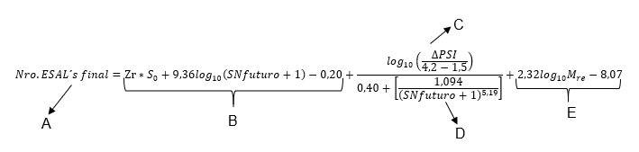
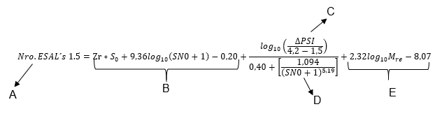

ESTIMACIÓN DE ESPESORES DE CAPAS EN LA REHABILITACIÓN DE PAVIMENTOS FLEXIBLES POR EL MÉTODO AASHTO 1998
| Nombre del proyecto: | |
| Ubicación del proyecto: | |
| Ruta: | |
| Tramo: | |
| Diseñador: |
Laboratorio virtual de Pavimentos
Reporte de cálculo de espesores de capas para la rehabilitación de pavimentos flexibles por el método AASHTO 1998
Renuncia
El software de diseño de espesores de capas para la rehabilitación de pavimentos flexibles por el método AASHTO 1998 (Versión BETA) se difunde bajo el patrocinio del Grupo de Investigaciín de Ingeniería Vial de la Titulación de Ingeniería Civil, en interés de mejorar el aprendizaje de diseño sobreespesores de pavimentos flexibles. La Universidad Técnica Particular de Loja no asume ninguna responsabilidad por su contenido o uso. Este documento no constituye un estándar, especificación o regulación, pues únicamente tiene fines académicos; así los nombres de los elaboradores pueden aparecer en este software solo porque se consideran esenciales para el objetivo de este.
ESTIMACIÓN DE ESPESORES DE CAPAS PARA LA REHABILITACIÓN DE PAVIMENTOS FLEXIBLES POR EL MÉTODO AASHTO 1998
Datos del proyecto:
Método de ensayo no destructivo (NDT)
Datos generales:
|
Factor “C” del módulo resiliente efectivo de la subrasante: 0.333333333 |
Desarrollo del método:
Para el cálculo del método de ensayo no destructivo (NDT) es importante tomar en cuenta los siguientes parámetros: módulo resiliente efectivo de la subrasante (Mre), módulo efectivo de todas las capas del pavimento (Ep) y el espesor efectivo del pavimento. Se define como espesor efectivo del pavimento a la diferencia entre el espesor de todas las capas que conforman el pavimento y el espesor fresado del pavimento.
Una vez ingresadas las deflexiones y distancias de los ensayos realizados, se escoge aquella que cumple la siguiente condición: “r ≥ 0.7ae”; es decir que la distancia de la deflexión sea mayor al 70% del radio de bulbo de tensiones que se genera, tal como se indica a continuación:
r ≥ 0.7ae
Luego calculamos el módulo resiliente retrocalculado con la siguiente fórmula
Mr = (0.24 * P) / (dr * r)
Siendo, "P" la carga, "dr" es la deflexión y "r" la distancia que cumple la condición de la AASHTO 1998.
Se calcula primeramente la presión aplicada por el centro de carga:
p = P / (π * a^2)
Figura 1. Factor de corrección para base granular o tratada con cemento
d0 corregido = deflexión al centro de carga * factor de corrección
Luego se calcula la relación Ep/Mr con la Figura 2. Para ello, en primer lugar se debe calcular el valor (Mr * d0 corregido) / P, donde P es la carga aplicada en milésimas de pulgadas; tal como se muestra a continuación:
Figura 2. Obtención de la relación Ep/Mr
Sin embargo, dicha relación Ep/Mr se la puede calcular matemáticamente como se indica a continuación, para ello se debe despejar el término Ep/Mr de la expresión indicada.

Despejando la relación Ep/Mr de la ecuación anterior se obtiene lo siguiente:
Ep = (Ep/Mr)*Mr
El módulo resiliente debe ser corregido para que sea equivalente al probado en el laboratorio de la AASHTO 1998. Para ello se procede a multiplicar el módulo resiliente retrocalculado por una constante cuyo nombre es factor “C”.
Mre= Mr * factor “C”
Este SNfuturo se puede obtener de dos formas: utilizando una ecuación o mediante un ábaco. En el primer caso la ecuación es la siguiente:
Reemplazando los valores se tiene:
Figura 3. Obtención del SN futuro
Resultados del método:
Previo al cálculo del espesor de la nueva capa se debe calcular matemáticamente el número estructural efectivo (SNef) con la siguiente fórmula, donde "D" es el espesor efectivo del pavimento previo y "Ep" el módulo efectivo de las capas del pavimento, calculado previamente.
SNef = 0.045 * D * (Ep)^1/3
Figura 4. Obtención del SNef método NDT
Figura 5. Gráfica para el cálculo del coeficiente estructural de la nueva carpeta asfáltica
D = (SN futuro – SNef) / a
Método Factor Condición
Desarrollo del método:
Para el cálculo del método Factor Condición es importante tomar en cuenta los siguientes parámetros: módulo resiliente efectivo de la subrasante (Mre), SNfuturo, los coeficientes de drenaje (m) y estructurales (a) de las capas que conforman el pavimento previo (e) y el espesor efectivo del pavimento.
Primeramente, el módulo resiliente debe ser corregido para que sea equivalente al probado en el laboratorio de la AASHTO 1998. Para ello se procede a multiplicar el módulo resiliente retrocalculado por una constante cuyo nombre es factor “C”.
Mre= Mr * factor “C”
Este SNfuturo se puede obtener de dos formas: utilizando una ecuación o mediante un ábaco. En el primer caso la ecuación es la siguiente:
Figura 6. Obtención del SN futuro.
Resultado del método:
Se debe calcular el número estructural efectivo (SNef) previo a la estimación de la sobrecarpeta. Para ello se deben obtener los coeficientes de drenaje y los coeficientes estructurales de cada capa. Para el cálculo del coeficiente de drenaje se utiliza la Tabla 1, en la que se ha sombreado la fila y columna correspondientes a los datos del drenaje y saturación de las capas de pavimento. En el caso de que existan valores intermedios de porcentaje de saturación se los puede interpolar. En este caso el coeficiente de drenaje es:
Tabla 1. Rango del valor escogido para los coeficientes de drenaje acorde a las capas del pavimento.
Para el uso de los coeficientes estructurales se usa la Tabla 2. En ella se ha sombreado las filas y columnas correspondientes a las capas existentes del pavimento. Además se han sombreado las filas y columnas correspondientes al material, condición de superficie y rango de coeficiente estructural de cada capa.
Con los coeficientes de drenaje y estructurales, se procede a calcular matemáticamente el SNef:
SNef = (ec*a)+(e1*a1*m1)+(e2*a2*m2)+(e3*a3*m3)
Figura 7. Gráfica para el cálculo del coeficiente estructural de la nueva carpeta asfáltica
D= (SN futuro – SNef) / a
Método Vida Remanente
Desarrollo del Método:
Para el cálculo del método Vida Remanente es importante tomar en cuenta los siguientes parámetros: módulo resiliente efectivo de la subrasante (Mre), SNfuturo, los coeficientes de drenaje (m) y estructurales (a) de las capas que conforman el pavimento previo (e) y el espesor efectivo del pavimento.
El módulo resiliente debe ser corregido para que sea equivalente al probado en el laboratorio de la AASHTO 1998. Para ello se procede a multiplicar el módulo resiliente retrocalculado por una constante cuyo nombre es factor “C”.
Mre= Mr * factor “C”
Este SNfuturo se puede obtener de dos formas: utilizando una ecuación o mediante un ábaco. En el primer caso la ecuación es la siguiente:
Figura 8. Obtención del SN futuro.
Resultados del método
Se debe calcular el número estructural efectivo (SN0) previo a la estimación de la sobrecarpeta. Para ello se deben obtener los coeficientes de drenaje y los coeficientes estructurales de cada capa. Para el cálculo del coeficiente de drenaje se utiliza la Tabla 3, en la que se ha sombreado la fila y columna correspondientes a los datos del drenaje y saturación de las capas de pavimento. En el caso de que existan valores intermedios de porcentaje de saturación se los puede interpolar. En este caso el coeficiente de drenaje es:
Tabla 3. Rango del valor escogido para los coeficientes de drenaje acorde a las capas del pavimento
Para el uso de los coeficientes estructurales se usa la Tabla 4. En ella se ha sombreado las filas y columnas correspondientes a las capas existentes del pavimento. Además se han sombreado las filas y columnas correspondientes al material, condición de superficie y rango de coeficiente estructural de cada capa del pavimento previo.
Con los coeficientes de drenaje y estructurales, se procede a calcular matemáticamente el SN0:
SN0 = (ec*a)+(e1*a1*m1)+(e2*a2*m2)+(e3*a3*m3)
Ya obtenido el SN0, es necesario corregir ese valor con el factor condición (CF) del método, para lo cual se calcula el Nro. ESAL´s 1,5 con el cual el pavimento llegará al colapso; esto se lo realiza con los datos siguientes:
-
Confiabilidad: 50 %
-
Desviación normal (Zr): 0
-
Índice de serviciabilidad (Δpsi): 2.7
Los cuales son reemplazados en la siguiente ecuación
%RL= 100 * (1 – (Nro. ESAL´s Inicial / Nro. ESAL´s 1,5 ))
Figura 9. Obtención del valor CF para el método vida remanente
Resultado del método:
SNef = SN0 * CF
Figura 10. Gráfica para el cálculo del coeficiente estructural de la nueva carpeta asfáltica
D= (SN futuro – SNef) / a
Laboratorio virtual de Pavimentos
Reporte de cálculo de espesores de capas para la rehabilitación de pavimentos flexibles por el método AASHTO 1998
ESTIMACIÓN DE ESPESORES DE CAPAS EN LA REHABILITACIÓN DE PAVIMENTOS FLEXIBLES POR EL MÉTODO AASHTO 1998
Método de ensayo no destructivo (NDT)
Resultados:
Resultados:
Resultados: